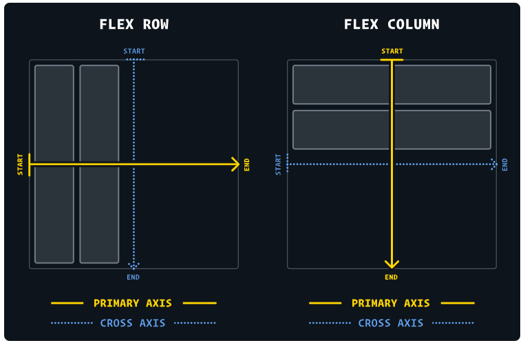

Flexbox cung cấp một cách hiệu quả hơn để bố trí, căn chỉnh và phân phối không gian giữa các thẻ
con
trong một thẻ cha chung, ngay cả khi kích thước của chúng không xác định và/hoặc động (thường
dùng
các đơn vị đo:
vh/vw/em/rem/%....)
Ý tưởng chính đằng sau bố cục flexbox là cung cấp cho vùng chứa khả năng thay đổi chiều
rộng/chiều
cao (và thứ tự) của các mục của nó để lấp đầy tốt nhất không gian có sẵn (hầu hết để phù hợp với
tất
cả các loại thiết bị hiển thị và kích thước màn hình). Flex container mở rộng các mục để lấp đầy
không gian trống có sẵn hoặc thu nhỏ chúng để tránh tràn.
Vì flexbox là một bộ mô-đun và không phải là một thuộc tính duy nhất, nên nó liên quan đến rất
nhiều thứ bao gồm
bộ tập hợp các thuộc tính của nó. Một số trong số chúng có nghĩa là được đặt trên thẻ cha (phần
tử cha, được gọi là “flex container”) trong khi những thuộc tính khác được đặt trên phần tử con
(được gọi là “flex items”)
Nếu bố cục “thông thường” dựa trên block và inline để xác định cách sắp xếp, thì bố cục linh hoạt
dựa
trên hướng “flex-flow”.

Các phần tử sẽ được sắp xếp theo hướng main axis (từ main-start
đến main-end) hoặc cross axis (từ cross-start đến
cross-end).
Khi nào nên sử dụng flexbox?
Bố cục flexbox đối lập với bố cục mặc định (direction-agnostic) (đối lập với bố cục
block và inline). Mặc dù chúng hoạt động tốt trong nhiều trường hợp, nhưng chúng thiếu tính linh
hoạt để hỗ trợ các kích thước màn hình lớn hoặc phức tạp
Note: Bố cục Flexbox phù hợp nhất với các thành phần của ứng dụng và kích thước
vùng trình bày nhỏ, trong khi bố cục Lưới (grid) dành cho bố cục có kích thước lớn hơn


{kind=link}